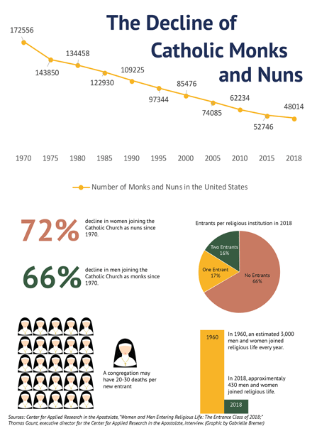

WASHINGTON ̶ Nearly all of the choir stalls in St. Anselm’s Abbey remained empty at the start of Mass. Only a handful of monks sat where a lively community of over 30 once flourished in the 1960s. Now, only 12 remain, and most of them are over 70 years old.
“We filled all of those choir stalls,” recalled Joseph Jensen, a 95-year-old monk at St. Anselm’s with wispy gray hairs and bright, blue eyes. “We’re always thinking, ‘What’s going to happen to us?’”
Smaller religious orders are pondering the same question as their numbers are diminishing at alarming rates.
The Center for Applied Research in the Apostolate reported a 72% decline in women joining the Catholic community as nuns, and a 66% decline in men joining as monks since 1970.
As these communities disappear, many congregations scramble to figure out how to keep their communities afloat. Others search for ways to continue their work.
Religious life in the Catholic Church is dwindling as the motivations of young people are changing. More professional options are open to women, and many adults aren’t making life changing decisions early in life.
The continual declining numbers among nuns and monks could put more strain on the existing congregations, causing them to rely on members of the community to fill positions in schools, hospitals and church maintenance.
“People here are panicked about it,” added Brother Matthew Nylund, a monk at St. Anselm’s.
At St. Anselm’s Abbey School in the 1960s, all of the classes were taught by monks who lived there, said James Wiseman, abbot at St. Anselm’s. Today, they play a very reduced role in teaching the classes and most of the faculty are not religious vocations.
At St. Anselm’s, it has been five years since someone joined the community and has taken their final vows, said Wiseman. The Center for Applied Research in the Apostolate reported that 66% of religious institutions did not have one person entering religious life in 2018. Another 17% of institutions reported one entrant and 16% reported two entrants.
Sister Cynthia Vives, a nun with the Society of the Holy Child Jesus in New Jersey, said nobody has joined her local congregation in years. Some older women join the congregation for awhile, but then they realize there isn’t much of a social group within the small community, Vives said.
Vives is 75-years-old and is the youngest of seven others in her local congregation. When she made her first vows in 1961, there were over 100 nuns affiliated with the Society of the Holy Child Jesus in the greater New York area. “It was the peak of young people choosing this option as a life commitment,” she said. It was common for at least five people out of a graduating class at her Catholic high school to choose religious life. “We were not unique,” she said.
Vives attributes the decline to women having more professional and life choices today. “What was open to us was you became a teacher, or you went to the convent,” she said. “Most girls in my socioeconomic circle … had the expectation of going to high school, go to college, get married and start a family.”

From 1945-1965, there was a “demographic bulge” where there was an “unusually large number of vocations people entering after World War II,” Gaunt said. There was a huge increase in monasteries and contemplative life, especially among soldiers. Gaunt believes it is because of the destruction and death these people experienced during World War II that drove them to religious life post-war.
About 10 years later, large numbers of men and women left religious life, Gaunt said. This first part of the decline is due to social movements like opposition to the Vietnam War, and the Civil Rights Movement that took place throughout the 1950s and 1960s.
Wiseman attributes the decline in people wanting to join religious life today to the decline of faith in the Catholic Church. The Pew Research Center, in October, stated that around 20% of adults in the United States identify as Catholic, which is down from 23% in 2009.
Even within the Catholic Church, Wiseman believes people have lost faith in traditional beliefs. “I know with some of our students, in our school, they don’t believe in the virgin birth.” If people are starting to sway on the fundamental beliefs of Catholicism, then they aren’t going to want to become part of religious life, Wiseman said.
Wiseman said another contribution to the decline in men and women entering religious life came from the Second Vatican Council from 1962-1965, which tried to bring the Catholic Church into the modern world. Before the Second Vatican Council, people could only serve the church in seminaries or religious communities. Today, young men and women can serve the church in a full-time position, while still being able to have a spouse and children.
Sister Mary Frances Hildenberger, a nun with the Daughters of Charity, entered religious life with 42 other women in 1965. When she had made her final vows five years later, there were only 25 remaining.
Today, there are only seven sisters in her local congregation. “We aren’t able to respond to as many needs,” Hildenberger said. Sometimes her group has had to decline requests for work. “We try not to get discouraged,” she said optimistically. “We try to focus on the younger members that are joining the community.”
Hildenberger believes part of the decline is due to Catholic families getting smaller. “When there were large families, parents would say, ‘I’d like to have one son a priest and one daughter a sister, and I’ll still have other children to get married and give me grandchildren.’”
Gaunt believes the numbers of men and women joining religious life will decline for 20 more years. Then the numbers will start to level out remain smaller. However, for the future of smaller religious communities where the median age is over 70, their future is still undecided. Monks, like Nylund, hold out hope, saying, “I think we will survive despite this problem.”